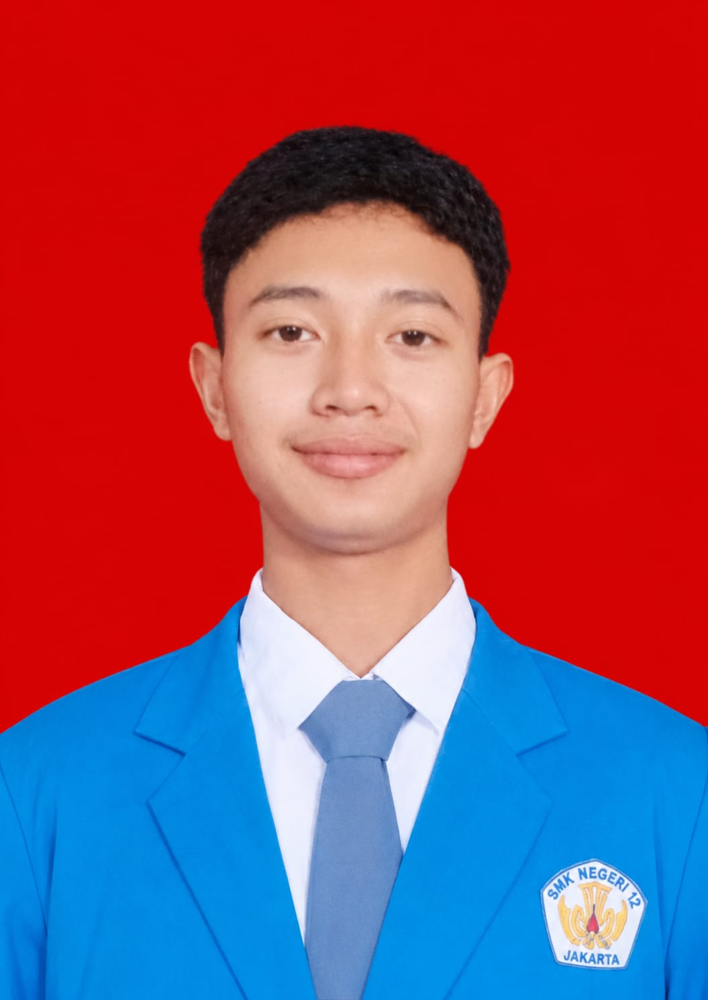

Arfan Fadhillaturafiq
Fresh Graduate | Software Engineering
Lulusan SMK jurusan Rekayasa Perangkat Lunak (Software Engineering) dengan pengalaman magang 6 bulan di BPBD DKI Jakarta serta peraih Juara 2 kompetisi tingkat internasional International Robothon 2025. Memiliki dedikasi tinggi, kemampuan kepemimpinan, dan siap berkembang secara profesional.

2nd Place
International Robothon 2025
↑ Klik lihat 4 Foto6 Bulan
Magang di BPBD DKI Jakarta
↑ Klik lihat 2 Foto6 Tahun
Pengalaman Organisasi Pramuka
↑ Klik lihat 3 FotoRPL / SE
SMK Negeri 12 Jakarta
↑ Klik lihat 3 FotoRingkasan Profesional
Lulusan Sekolah Menengah Kejuruan jurusan Rekayasa Perangkat Lunak (Software Engineering) dengan pengalaman organisasi selama enam tahun di bidang Kepramukaan. Memiliki pengalaman magang selama enam bulan di Badan Penanggulangan Bencana Daerah Provinsi DKI Jakarta (BPBD DKI Jakarta) yang berfokus pada administrasi dan pengarsipan dokumen.
Berhasil meraih Juara Kedua dalam kompetisi International Robothon 2025. Memiliki kemampuan kerja sama tim, komunikasi, kepemimpinan, dan adaptasi yang kuat, serta motivasi tinggi untuk terus belajar dan berkembang secara profesional di dunia kerja.
Pendidikan
SMK NEGERI 12 JAKARTA
Sekolah Menengah Kejuruan — Rekayasa Perangkat Lunak (Software Engineering)
Status: Fresh Graduate
Kesiapan: Siap bekerja mandiri maupun dalam tim
Pengalaman Kerja & Organisasi
BPBD DKI Jakarta
Badan Penanggulangan Bencana Daerah Provinsi DKI Jakarta
- Membantu penyusunan dan pengarsipan surat-menyurat resmi.
- Mengorganisasi dan mengelola dokumen administrasi kantor.
- Mendukung kegiatan operasional administrasi perkantoran sehari-hari.
- Menjaga kerapian serta tata letak dokumen arsip secara sistematis.
- Memahami alur kerja profesional dan budaya kerja di instansi pemerintahan.
Kepramukaan & OSIS
Organisasi Pramuka (6 Tahun) • OSIS SMP (2 Tahun)
- Aktif berpartisipasi dalam berbagai kegiatan organisasi dan kepramukaan.
- Berpengalaman dalam perencanaan acara, kepanitiaan, dan pelaksanaan kegiatan.
- Mengembangkan kemampuan kepemimpinan dan koordinasi antar anggota.
- Menunjukkan kerja sama tim yang solid serta rasa tanggung jawab yang tinggi.
Second Place — International Robothon 2025
Berhasil meraih juara kedua dalam kompetisi robotika tingkat internasional International Robothon 2025.
Keahlian (Skills)
Hard Skills
Soft Skills
Mari Terhubung
Tertarik untuk berdiskusi mengenai peluang kerja, magang lanjutan, atau kolaborasi proyek? Silakan hubungi saya melalui kontak di bawah ini.